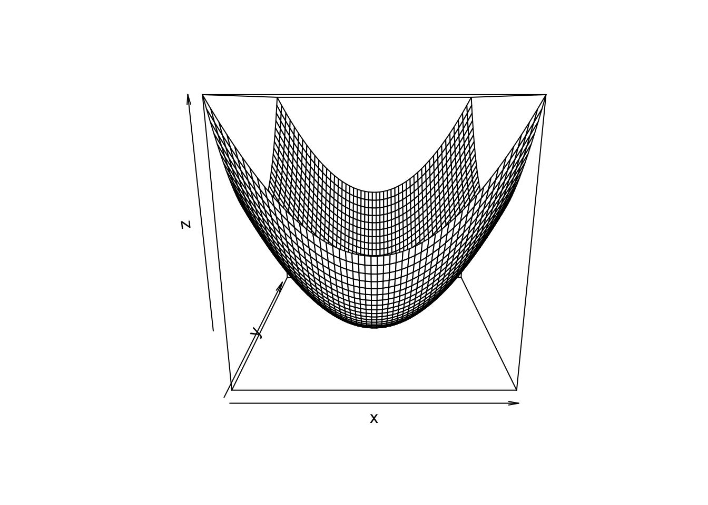
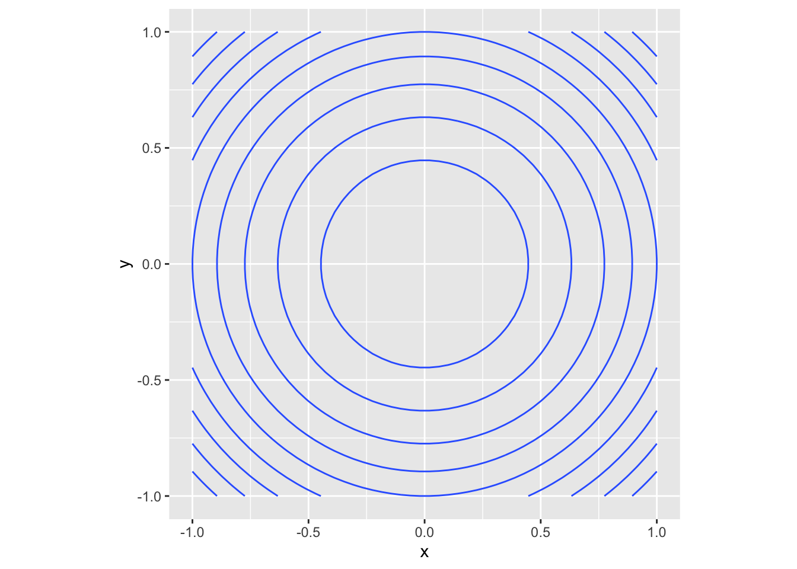
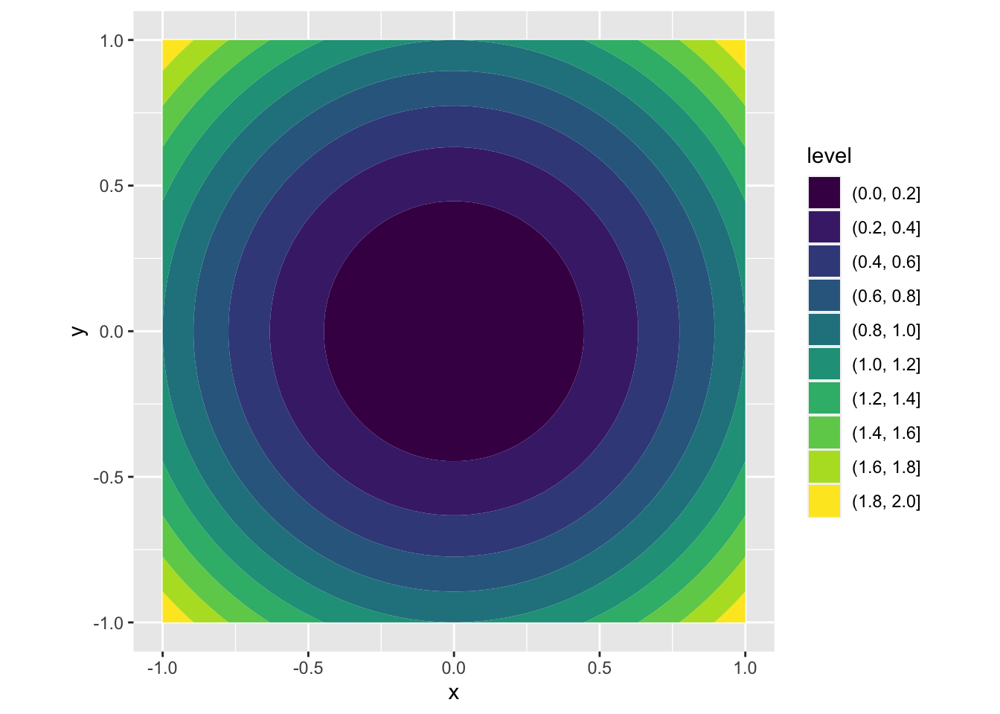
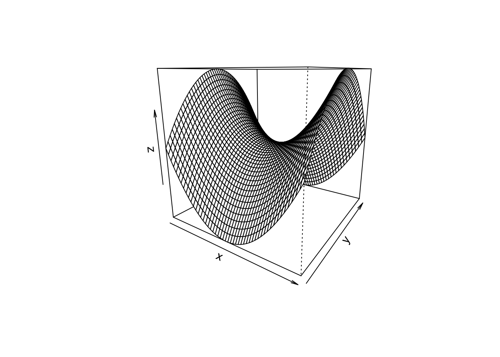
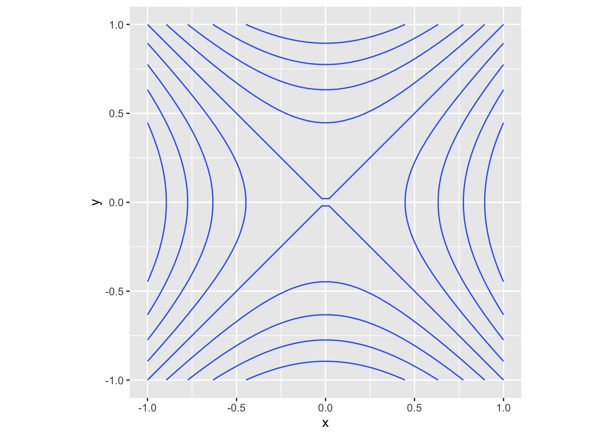
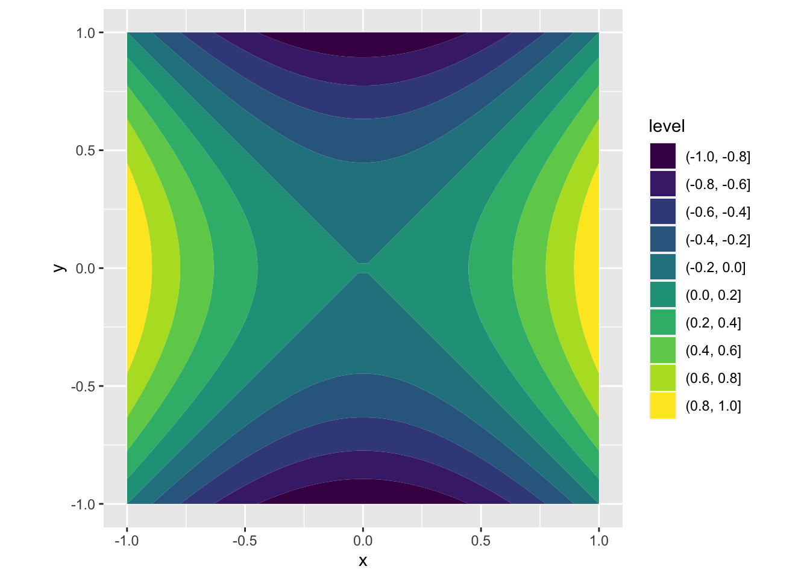

library(tidyverse)
library(dasc2594)
set.seed(2021)24 Graphs and Limits
Here we start a transition to topics in vector calculus. We will start with a discussion of functions of two variables (although the functions are not assumed to be linear). We define a function of two variables explicitly as \(z = f(x, y)\).
Definition 24.1 Like with linear functions, we can define the domain and range for general functions of two variables. A function \(f(x, y)\) assigns each point \((x, y)\) in some domain \(\mathcal{D}\) in \(\mathcal{R}^2\) to a unique number \(z\) in a subset of \(\mathcal{R}\). The set of inputs \(\mathcal{D}\) is called the domain of the function and the range is the set of real numbers \(z\) that are the output of the function over all the inputs in \(\mathcal{D}\)
Example 24.1 Let \(f(x, y) = \sqrt{1 - x^2 - y^2}\).
The domain of \(f\) is the set of points \((x, y)\) such that \(x^2 + y^2 \leq 1\) which is the unit circle (draw picture).
The range is the unit interval \([0, 1]\)
24.1 Graphs and level curves
Example 24.2 The parabola
Consider the function of two variables
\[ \begin{aligned} f(x, y) = x^2 + y^2 \end{aligned} \]
which defines the surface

The 3-dimensional surface can be represented in 2-dimensions using level curves (think of a topographic map)
data.frame(expand.grid(x, y)) %>%
rename(x = Var1, y = Var2) %>%
mutate(z = parabola(x, y)) %>%
ggplot(aes(x = x, y = y, z = z)) +
geom_contour() +
coord_fixed(ratio = 1)
where each curve in the (x, y) plane has exactly the same value of \(f(x, y)\). Alternatively, this can be represented using filled level curves
data.frame(expand.grid(x, y)) %>%
rename(x = Var1, y = Var2) %>%
mutate(z = parabola(x, y)) %>%
ggplot(aes(x = x, y = y, z = z)) +
geom_contour_filled() +
coord_fixed(ratio = 1)
Notice that although the original parabola was continuous, these 2-d representations simplify the diagram by representing the contours as discrete values.
Example 24.3 A saddle function
Consider the function of two variables
\[ \begin{aligned} f(x, y) = x^2 - y^2 \end{aligned} \]
which defines the surface

The 3-dimensional surface can be represented in 2-dimensions using level curves (think of a topographic map)
data.frame(expand.grid(x, y)) %>%
rename(x = Var1, y = Var2) %>%
mutate(z = saddle(x, y)) %>%
ggplot(aes(x = x, y = y, z = z)) +
geom_contour() +
coord_fixed(ratio = 1)
where each curve in the (x, y) plane has exactly the same value of \(f(x, y)\). Alternatively, this can be represented using filled level curves
data.frame(expand.grid(x, y)) %>%
rename(x = Var1, y = Var2) %>%
mutate(z = saddle(x, y)) %>%
ggplot(aes(x = x, y = y, z = z)) +
geom_contour_filled() +
coord_fixed(ratio = 1)
Notice that although the original saddle was continuous, these 2-d representations simplify the diagram by representing the contours as discrete values.
24.2 Limits
For functions of several variables, we have to define limits and continuity for these multivariable settings. For now, we focus on two variable functions as the multivariable case follows similar from the two variable case.
Let \(P(x, y) \rightarrow P_0(a, b)\) be a path in the \(x-y\) plane that starts at the point \(P(x, y)\) and ends at the point \(P_0(a, b)\) with coordinates \((a, b)\). Thus, we can understand the limit as the fixed value of \(f(x, y)\) for which all paths that connect the points \(P(x, y)\) that are “close” to \(P_0(a, b)\) converge to.
For one-dimensional limits, “close” was defined as distance. Thus, for multivariable functions, “close” is defined as the Euclidean distance defined by a “ball” of radius \(\delta\) and the limits examines the function output as the radius \(\delta\) goes to 0.
Recall that the distance \(dist((x, y), (a, b))\) between two points \((x, y)\) and \((a, b)\) is
\[ \begin{aligned} dist((x, y), (a, b)) = \sqrt{(x-a)^2 + (y-b)^2} \end{aligned} \]
** Draw images**
Definition 24.2 (Limit of a Function of Two Variables) The function f(x, y) has limit \(L\) as \(P(x, y) \rightarrow P_0(a, b)\), written
\[ \begin{aligned} \lim_{(x, y) \rightarrow (a, b)} f(x, y) = \lim_{P \rightarrow P_0} f(x, y) = L, \end{aligned} \]
if, for any \(\epsilon > 0\) (the radius of the ball that defines the “closeness” of the point), there exists a \(\delta > 0\) such that
\[ \begin{aligned} |f(x, y) - L| < \epsilon \end{aligned} \]
whenever \((x, y)\) is in the domain of \(f\) and
\[ \begin{aligned} 0 < \sqrt{(x-a)^2 + (y-b)^2} < \delta. \end{aligned} \]
In the definition, as the value of \(\delta\) is getting smaller, the distance between the set of points \(P(x, y)\) within radius \(\delta\) of the point \(P_0(a, b)\) is getting smaller. As a consequence, the limit in the definition above exists only if \(f(x, y)\) approaches the value \(L\) along all possible paths in the domain of \(f\).
Example 24.4 In class notes * Future work: write out hand-written examples
Theorem 24.1 Let \(L\) and \(M\) be real numbers and let \(\lim_{(x, y) \rightarrow (a, b)}f(x, y) = L\) and \(\lim_{(x, y) \rightarrow (a, b)}g(x, y) = M\) for functions \(f(x, y)\) and \(g(x, y)\). Let \(c\) be a constant and \(n>0\), then:
- Sum of limits:
\[ \begin{aligned} \lim_{(x, y) \rightarrow (a, b)} \left( f(x, y) + g(x, y) \right) = L + M \end{aligned} \]
- Difference of limits:
\[ \begin{aligned} \lim_{(x, y) \rightarrow (a, b)} \left( f(x, y) - g(x, y) \right) = L - M \end{aligned} \]
- Scalar multiple of the limit:
\[ \begin{aligned} \lim_{(x, y) \rightarrow (a, b)} c f(x, y) = c L \end{aligned} \]
- Product of limits:
\[ \begin{aligned} \lim_{(x, y) \rightarrow (a, b)} f(x, y) g(x, y) = LM \end{aligned} \]
- Quotient of limits: As long as \(M>0\) we have
\[ \begin{aligned} \lim_{(x, y) \rightarrow (a, b)} \frac{f(x, y)}{g(x, y)} = \frac{L}{M} \end{aligned} \]
- Power of the limit:
\[ \begin{aligned} \lim_{(x, y) \rightarrow (a, b)} f(x, y)^n = L^n \end{aligned} \]
- Root of the limit: If \(n\) is even, we assume \(L > 0\)
\[ \begin{aligned} \lim_{(x, y) \rightarrow (a, b)} f(x, y)^{1/n} = L^{1/n} \end{aligned} \]
Example 24.5 Use the rules above to evaluate the limit \(\lim_{(x, y) \rightarrow (2, 3)} 4x^3y + \sqrt{xy}\)
24.2.1 Boundary points
Definition 24.3 Define a region \(\mathcal{D}\) in \(\mathcal{R}^2\).
An interior point \(P\) of \(\mathcal{D}\) is a point that lies entirely in the region \(\mathcal{D}\). Mathematically, a point \(P\) is an interior point of \(\mathcal{D}\) if it is possible to define a ball of radius \(\epsilon>0\) centered at \(P\) such that this ball only contains points within \(\mathcal{D}\).
A boundary point \(P\) of \(\mathcal{D}\) is a point that lies on the edge of the region \(\mathcal{D}\). Mathematically, a point \(P\) is an boundary point of \(\mathcal{D}\) if every ball of radius \(\epsilon>0\) centered at \(P\) contains at least one point in \(\mathcal{D}\) and one point outside \(\mathcal{D}\).
Example 24.6 Let \(f(x, y) = \sqrt{1 - x^2 - y^2}\). The boundary points are all the points on the unit circle an the interior points are all the points on the interior of the unit disk. draw picture
Definition 24.4 A region \(\mathcal{D}\) is said to be open if it only contains interior points (i.e., \(\mathcal{D}\) has no boundary points). A region \(\mathcal{D}\) is said to be closed if the region contains all its boundary points.
Figure: limit paths along the boundary
Example 24.7 Consider the \(\lim_{(x, y) \rightarrow (4, 4)} \frac{x^2 - y^2}{x - y}\). Because the point \((4, 4)\) is not a valid point in the domain (can’t divide by \(4-4=0\)), the point \((4, 4)\) is a boundary point of the domain. The boundary of the domain that is not contained in the domain is the set of points \(x = y\). Assuming we are not taking a path along the boundary, we know that \(x \neq y\) in the interior of the domain. Hence,
\[ \begin{aligned} \lim_{(x, y) \rightarrow (4, 4)} \frac{x^2 - y^2}{x - y} & = \lim_{(x, y) \rightarrow (4, 4)} \frac{(x - y)(x + y)}{x - y} \\ & = \lim_{(x, y) \rightarrow (4, 4)} x + y = 4 + 4 = 8\\ \end{aligned} \]
for all paths that do not cross the line \(y = x\).
Example 24.8 nonexistence of limit in class
24.3 Continuity
A very important property of functions is continuity. In a general sense, a function is continuous if two nearby input values result in nearby output values. As a graph, this means that there are no hops, skips, or jumps.
Definition 24.5 The function \(f(x, y)\) is said to be continuous at the point \((a, b)\) if the following are true
\(f(a, b)\) is defined at \((a, b)\)
\(\lim_{(x, y) \rightarrow (a, b)} f(x, y)\) exists
\(\lim_{(x, y) \rightarrow (a, b)} f(x, y) = f(a, b)\)
Example 24.9 checking continuity in class \(f(x, y) = \begin{cases} \frac{x^2 - y^2}{x - y} & \mbox{ if } x \neq y \\ x + y & \mbox{ if } x = y \\ \end{cases}\)